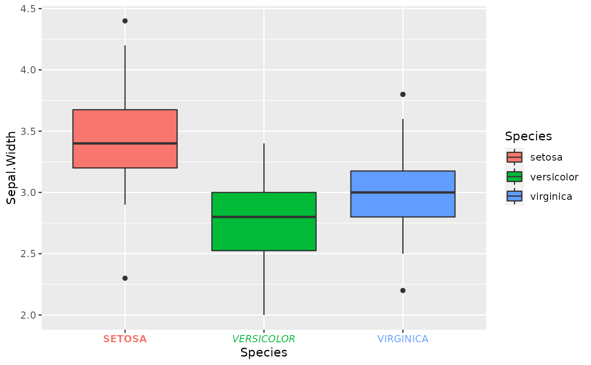
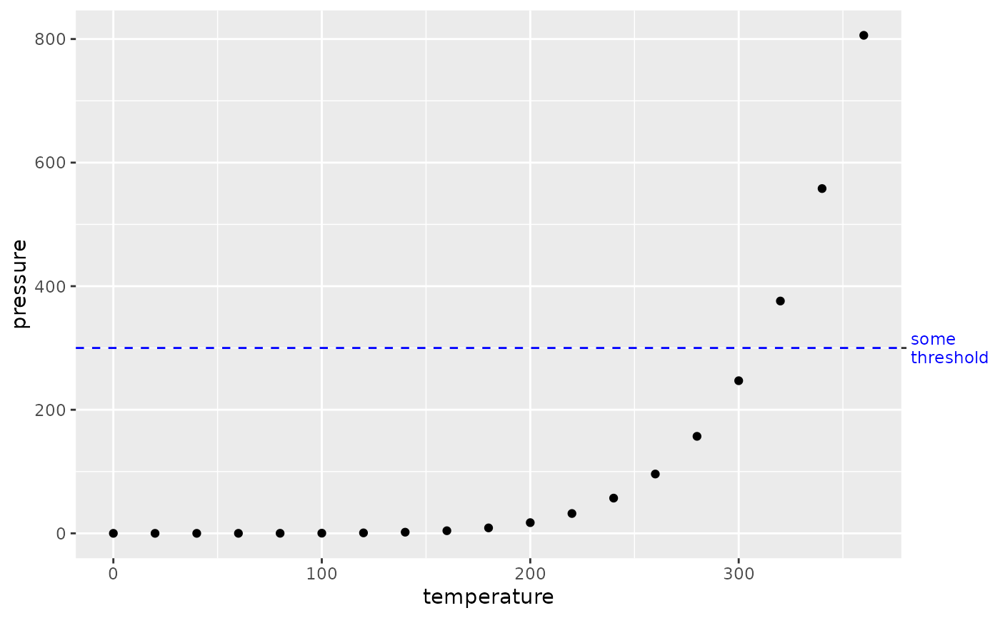

This axis allows a greater degree of control than the default axes guides. In
particular, this axis allows setting break positions and labels independently
from the scale and is not bound by the same constraints as secondary axes.
Additionally, label attributes may be set in parallel to the labels
themselves, circumventing the unsupported vectorised input to
element_text().
Usage
guide_axis_manual(
title = waiver(),
breaks = waiver(),
labels = waiver(),
label_family = NULL,
label_face = NULL,
label_colour = NULL,
label_size = NULL,
label_hjust = NULL,
label_vjust = NULL,
label_lineheight = NULL,
label_color = NULL,
label_margin = NULL,
check.overlap = FALSE,
angle = NULL,
n.dodge = 1,
order = 0,
colour = NULL,
color = NULL,
trunc_lower = NULL,
trunc_upper = NULL,
position = waiver()
)Arguments
- title
A character string or expression indicating a title of guide. If
NULL, the title is not shown. By default (waiver()), the name of the scale object or the name specified inlabs()is used for the title.- breaks
One of the following ways to parametrise the tick and label positions:
NULLto draw no ticks and labels.waiver()for the default breaks computed by the scale (default).A
numericvector for continuous or discrete scales, or acharactervector for discrete scales.A
functionthat takes the limits as input and returns breaks as output. Also accepts rlang lambda notation.A
unitvector for setting data-independent breaks.
- labels
One of the following ways to dictate the labels:
NULLto draw no labels.waiver()for the default labels computed by the scale on the breaks (default). Note that a scale with non-identity transformation is unlikely to graciously handle breaks defined in grid-units.A
charactervector givingA
functionthat takes the breaks as input and returns labels as output. Also accepts rlang lambda notation.
- label_family, label_face, label_colour, label_size, label_hjust, label_vjust, label_lineheight, label_color, label_margin
Arguments passed down to the label constructor. See
element_text()arguments, which these arguments mirror with thelabel_-prefix. With the exception oflabel_margin, the otherlabel_*arguments are assumed be parallel to (the result of) thelabelsargument and will be recycled withrep_len()as necessary. By default, these parameters are taken from the theme.- check.overlap
silently remove overlapping labels, (recursively) prioritizing the first, last, and middle labels.
- angle
Compared to setting the angle in
theme()/element_text(), this also uses some heuristics to automatically pick thehjustandvjustthat you probably want.- n.dodge
The number of rows (for vertical axes) or columns (for horizontal axes) that should be used to render the labels. This is useful for displaying labels that would otherwise overlap.
- order
Used to determine the order of the guides (left-to-right, top-to-bottom), if more than one guide must be drawn at the same location.
- colour
A
character(1)with a valid colour for colouring the axis text, axis ticks and axis line. Overrules the colour assigned by the theme.- color
A
character(1)with a valid colour for colouring the axis text, axis ticks and axis line. Overrules the colour assigned by the theme.- trunc_lower
The lower and upper range of the truncated axis:
NULLto not perform any truncation.A
functionthat takes the break positions as input and returns the lower or upper boundary. Note that also for discrete scales, positions are the mapped positions asnumeric.A
numericvalue in data units for the lower and upper boundaries.A
unitobject.
- trunc_upper
The lower and upper range of the truncated axis:
NULLto not perform any truncation.A
functionthat takes the break positions as input and returns the lower or upper boundary. Note that also for discrete scales, positions are the mapped positions asnumeric.A
numericvalue in data units for the lower and upper boundaries.A
unitobject.
- position
Where this guide should be drawn: one of top, bottom, left, or right.
See also
Other axis-guides:
guide_axis_logticks(),
guide_axis_minor(),
guide_axis_nested(),
guide_axis_truncated()
Examples
ggplot(iris, aes(Species, Sepal.Width)) +
geom_boxplot(aes(fill = Species)) +
guides(x = guide_axis_manual(
label_colour = scales::hue_pal()(3),
label_face = c("bold", "italic", "plain"),
labels = toupper
))

# Using the manual axis to annotate some specific point
ggplot(pressure, aes(temperature, pressure)) +
geom_point() +
geom_hline(yintercept = 300, linetype = 2, colour = "blue") +
guides(y.sec = guide_axis_manual(breaks = 300, labels = "some\nthreshold",
label_colour = "blue"))
